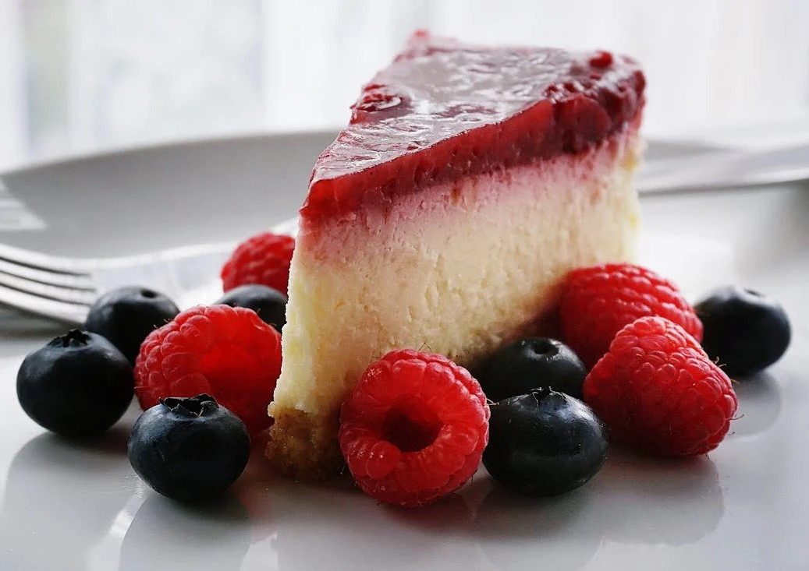
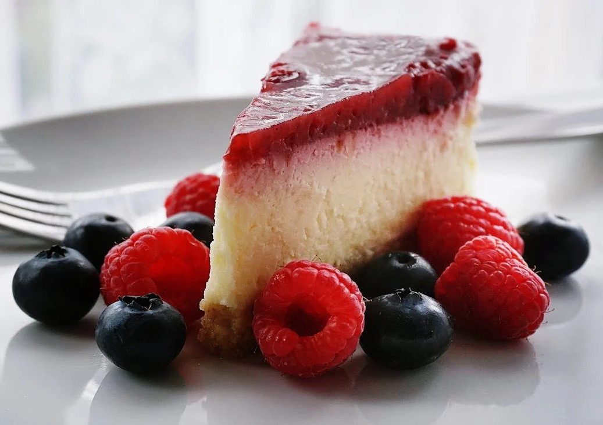

La Tierra Gourmet.


 

Personaliza tu Menú.
Pescados
- Corbina
- Anguila
- Rodaballo
- Lubina
- San Pedro
Carnes
- Ciervo
- Solommillo de ternera
- Chuletón de Buey
- Pichón
- Solommilo de Angus
El Restaurante La Tierra Gourmet, elabora todos sus platos con productos autóctonos y de proximidad, poniendo en cada elaboración todo su cariño, dedicación y compromiso.
Descrubre nuestra Vinoteca
Encontramos nuestra espectacular bodega con producciones locales e internacionales y ediciones limitadas exclusivas para La tierra Gourmet.
Tanto si quieres un menú con maridaje como si prefieres elegir una botella a la carta, nuestro sumiller te asesorará en todo momento.
| Vino | Nombre | Uva | Aroma |
|---|---|---|---|
| Vino Tinto | Rioja Ramón Bilbao | Airén | Afrutado |
| La montesa | Cabernet | Roble | |
| Vino Blanco | Albariño Mar de Frandes | Sultania | Frescor |
| Chacolí | Courbu | Flor y notas Salinas | |
| Vino Rosado Espumoso |
Cava Cordniu | Labrusca | Cítrico y burbujeante |
| Don Perignon | Muscadia | Ligero y Suave |